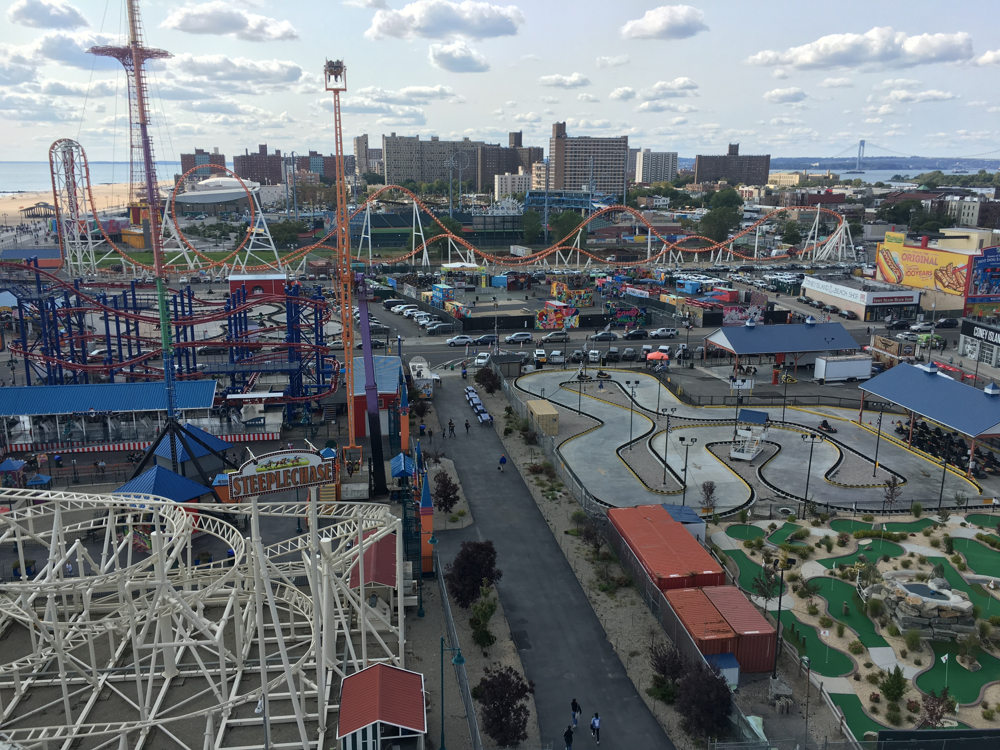
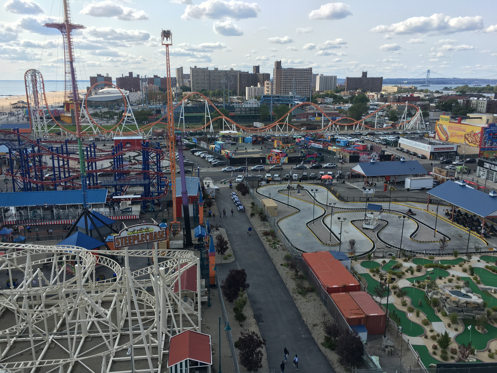

Where is it?
1000 Surf Ave, Brooklyn, NY 11224 in Coney Island
When is the first time you were there?
The first time I went to Luna Park I was 8 years old with my family
What is special/meaningful about it?
What's special about this place is that it's the only amusement park in the five boroughs. It has more history than some of the most historic places in Brooklyn. Coney Island was famous for it's beach, but Luna Park (formally known as Astroland) made it famous for it's history. It's one of the only amusement parks to have a beach right next to it which as a kid gave me joy.
Why should other people visit it?
People should go to Luna Park because over the years it has become a tourist destination bringing all kinds of people together. Its next to a beach which makes it great for family vacations, in the city so you can go anywhere and everywhere, and it's for all ages and people.
Is there anything they need to know or prepare to go there? What's the best way to get there?
Some things you would need to prepare for is to be ready to have fun, bring a bathing suit, and a little bit of spare change if you want to go on rides and get food. Besides that family and friends so you can share the fun and have an amazing day. The best way to get there is by taking the Q,D,N, and F trains.


 
